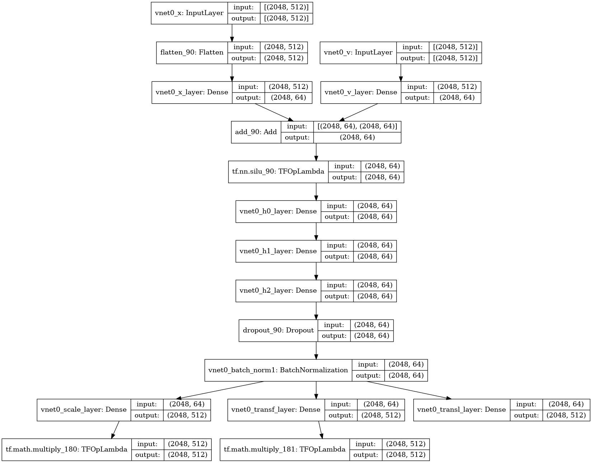

<!DOCTYPE html>
<html lang="en">
  <head>
    <meta charset="utf-8" />
    <meta name="viewport" content="width=device-width, initial-scale=1.0, maximum-scale=1.0, user-scalable=no" />

    <title>l2hmc-qcd @ ANL PoS 2021</title>
    <link rel="shortcut icon" href="./favicon.ico"/>
    <link rel="stylesheet" href="./dist/reveal.css" />
    <link rel="stylesheet" href="./dist/theme/simple.css" id="theme" />
    <link rel="stylesheet" href="./css/highlight/github.css" />
    <link rel="stylesheet" href="./_assets/custom/custom_theme.css" />

  </head>
  <body>
    <div class="reveal">
      <div class="slides"><section  data-markdown><script type="text/template">

<!-- .slide: data-background="#1c1c1c" -->

<div id='dark'>

## Training Topological Samplers  
## for Lattice Gauge Theory

<small>[arXiV:2105.03418](https://arxiv.org/abs/2105.03418)</small>

<span style="fon-size:0.6em;">[Postdoctoral Research <br>&amp; Career Symposium](https://web.cvent.com/event/288eb084-4de9-4827-ba50-2a32c625ebf3/summary)
<br>
November, 2021 @ [ANL](https://www.anl.gov) </span>
<br>
<br>

## [**Sam Foreman**](https://www.samforeman.me)

[](https://github.com/saforem2/l2hmc-qcd)

[](https://alcf.anl.gov)

</div>
</script></section><section  data-markdown><script type="text/template">
# Introduction

<div id="left" style="width=50%;">

- **Standard Model:**
    - E&amp;M, strong, weak interactions, elementary particles

- **Quantum Chromodynamics (QCD)**:
	- Theory of the strong interaction between quarks and gluons
	- **Analytically intractable**
        - Discretize space-time onto lattice

</div>

<div id="right" style="width=50%;">


 <!-- .element width="275px" align="right" -->

<br>

  <!-- .element width="100%" align="right" -->


</div>
</script></section><section  data-markdown><script type="text/template">
# <span style="color: #3B4CC0;">Critical Slowing Down</span>

<div id="right" style="width:48%; max-width:50%">

 <!-- .element width="400px" align="right" --> 

</div>

&nbsp;

<div id="left" style="width=52%; max-width: 55%; font-size: 0.8em;">

- Generating independent configurations is currently a major bottleneck for lattice QCD.

- As $\beta\rightarrow \infty$, configurations get stuck in sectors of fixed gauge topology $Q = \text{ const. }$ 

  - $\Rightarrow$ \# of configurations required to reliably estimate errors <span id="red">**increases exponentially**</span> 
  - $\tau_{\mathrm{int}} \rightarrow \infty$

</div>
</script></section><section  data-markdown><script type="text/template">	
## HMC: Leapfrog Integrator

  <!-- .element width="50%" -->

<iframe data-src="https://chi-feng.github.io/mcmc-demo/app.html"></iframe> <!-- .element height="450px" width="90%" -->
</script></section><section  data-markdown><script type="text/template">
# Issues with HMC
	
- Energy levels selected randomly $\rightarrow$ slow mixing!
- Cannot easily traverse low-density zones
- What do we want in a good sampler?
  - **Fast mixing** (small autocorrelations) 
  - **Fast burn-in** (quick convergence)
  - Ability to mix across energy levels and isolated modes

 <!-- .element width="49%" -->
 <!-- .element width="49%" -->
</script></section><section  data-markdown><script type="text/template">
# Leapfrog Layer

<div id="left" style="width:40%; align:center; font-size:0.9em; text-align: left;">

- <span id="red"><b><u>L2HMC Update</u></b></span>:

  

</div>

&nbsp;

 <!-- .element width="55%" align="center" -->


</script></section><section  data-markdown><script type="text/template">
## Toy Example: GMM $\in \mathbb{R}^{2}$


</script></section><section  data-markdown><script type="text/template">
# Lattice Gauge Theory
	
<div id="left" class="float:left" style="padding-left:20px; text-align:left; max-width=30%;">

- <b>Link variables</b>: 
  $\color{#228BE6}{U_{\mu}(x) = e^{i x_{\mu}(n)}\in U(1)}$

  with <span style="font-size:0.9em;">$x_{\mu}(n)\in[-\pi,\pi]$</span>


- <b>Wilson Action</b>: $\color{#228BE6}{S_{\beta}(x) = \beta\sum_{P} 1 - \cos x_{P}}$,
	
  <span style="font-size:0.8em;">$x_{P}= x_{\mu}(n) + x_{\nu}(n+\hat{\mu})-x_{\mu}(n+\hat{\nu})-x_{\nu}(n)$</span>
	
</div>
	
<div id="right" style="width=40%;">

 <!-- .element align="right" width="70%" -->

</div>

<div class="float:left" style="padding-left:20px; width=100%; text-align:left;">

- <b>Topological Charge</b>:

  <span id="note" style="padding:10px;background:#D0F3D5;">✅ $Q_{\mathbb{R}} = \frac{1}{2\pi}\sum_{P} \sin x_{P}\in\mathbb{R}$ </span> 

  <span id="note" style="padding:10px;background:#F7C2CC;">❌ $Q_{\mathbb{Z}} = \frac{1}{2\pi}\sum_{P} \left\lfloor x_{P}\right\rfloor\in\mathbb{Z}$ 
	
  here $\left\lfloor x_{P}\right\rfloor = x_{P}-2\pi\left\lfloor\frac{x_{P}+\pi}{2\pi}\right\rfloor$
</script></section><section  data-markdown><script type="text/template">### Integrated Autocorrelation Time: $\tau_{\mathrm{int}}$
 <!-- .element width="50%" -->
 <!-- .element width="90%" -->
	  </script></section><section  data-markdown><script type="text/template">
# Interpretation


<br>
<span style="font-size:0.6em; text-align: center;">
<b>(a.)</b> Deviation in the average plaquette ; 
<b>(b.)</b> Real-valued topological charge ; 
<b>(c.)</b> Effective energy ;
</span>

<br>
<b>Fig.</b> Illustration of how different observables evolve over a
single L2HMC trajectory.
</small>
</script></section><section  data-markdown><script type="text/template">
<!-- .slide: data-background="#1c1c1c" -->

# [](https://github.com/saforem2/l2hmc-qcd) [l2hmc-qcd](https://github.com/saforem2/l2hmc-qcd)

- [arXiV:2105.03418](https://arxiv.org/abs/2105.03418)

- Source code publicly available

- Both `pytorch` and `tensorflow` implementations with support for distributed training, automatic checkpointing, etc.

- Generic interface, easily extensible

- <b>Work in progress</b> scaling up to 2D, 4D $SU(3)$
</script></section><section  data-markdown><script type="text/template">
## Non-Compact Projection 
<small>[arXiv:2002.02428](https://arxiv.org/abs/2002.02428)</small>

<div style="font-size:0.8em;">

- Project $x \in[-\pi, \pi]$ onto $\mathbb{R}$ using a transformation $z = g(x)$:
  $$ z = \tan\left(\frac{x}{2}\right) $$
- Perform the update in $\mathbb{R}$:
  $$ z' = m^{t}\odot z + \bar{m}^{t}\odot \left[\alpha z + \beta\right]$$
- Project back to $[-\pi, \pi]$ using $x = g^{-1}(z)$:
  $$ x = 2 \tan^{-1}(z) $$

</div>
</script></section><section  data-markdown><script type="text/template">
# Non-Compact Projection

- Combine into a single update:
  $$ x' = \color{#228BE6}{m^{t}}\odot x +
  \color{#FA5252}{\bar{m}^{t}}\odot\left[2\tan^{-1}\left(\alpha\tan\left(\frac{x}{2}\right)\right)+\beta\right]
  $$
- With corresponding Jacobian:
  $$ \frac{\partial x'}{\partial x} = \frac{\exp(\varepsilon s_{x})}{\cos^{2}(x/2)+exp(2\varepsilon s_{x})\sin(x/2)} $$


</div>
</script></section><section  data-markdown><script type="text/template">
## Acknowledgements

<div id="left">

### Collaborators:
 - Xiao-Yong Jin
 - James C. Osborn

### References:
 - [Link to slides](https://bit.ly/l2hmc-ect2021)
 - [Link to github](https://github.com/saforem2/l2hmc-qcd)
 - [reach out!](mailto://foremans@anl.gov)
 - [Link to HMC demo](https://chi-feng.github.io/mcmc-demo/app.html)
 - [arXiv:2105.03418](https://arxiv.org/abs/2002.02428)
 - [arXiv:2002.02428](https://arxiv.org/abs/2002.02428)


</div>

<div id="right">

### Huge thank you to:
 - Yannick Meurice
 - Norman Christ
 - Akio Tomiya
 - Luchang Jin
 - Chulwoo Jung
 - Peter Boyle
 - Taku Izubuchi
 - Critical Slowing Down group (ECP)
 - ALCF Staff + Datascience Group

</div>

<small> 
This research used resources of the Argonne Leadership Computing Facility,
which is a DOE Office of Science User Facility supported under Contract
DE-AC02-06CH11357.
</small>
</script></section><section  data-markdown><script type="text/template">
### Network Architectures


</script></section><section  data-markdown><script type="text/template">
### Network Architectures


</script></section><section  data-markdown><script type="text/template"><style>

:root {
    --r-heading-text-transform: none;
    --r-block-margin: 20px;
    --r-heading-margin: 0 0 20px 0;
    --r-heading-font: "Open Sans", Helvetica, Impact, sans-serif;
    --r-main-font: 'Source Sans Pro', Helvetica Neue, Helvetica, Arial, sans-serif;
    --r-main-font-size: 38px;
    --r-block-margin: 10px;
    --r-heading-margin: 0 0 20px 0;
    --r-heading-line-height: 1.2;
    --r-heading-letter-spacing: -0.45px;
    --r-heading-word-spacing: 0.5px;
    --r-heading-text-transform: none;
    --r-heading-text-shadow: none;
    --r-heading-font-weight: 800;
    --r-heading1-text-shadow: none;
    --r-heading1-size: 2.0em;
    --r-heading2-size: 1.5em;
    --r-heading3-size: 1.20em;
    --r-heading4-size: 1.15em;
    --r-heading5-size: 1.10em;
    --r-heading6-size: 1.05em;
    --r-code-font: "agave Nerd Font", monospace;
    --r-link-color: #007DFF;
    --r-link-color-dark: #f92672;
    --r-link-color-hover: #63ff51;
    --r-controls-color: #228BE6;
    --r-progress-color: #00CCFF;
    --r-selection-background-color: rgba(30, 60, 107, 0.9);
    --r-selection-color: #fff;
    --r-main-color: #222;
    --r-heading-color: #222;
    --r-background-color: #fff;
}

</style>
</script></section></div>
    </div>

    <script src="./dist/reveal.js"></script>

    <script src="./plugin/markdown/markdown.js"></script>
    <script src="./plugin/highlight/highlight.js"></script>
    <script src="./plugin/zoom/zoom.js"></script>
    <script src="./plugin/notes/notes.js"></script>
    <script src="./plugin/math/math.js"></script>
    <script>
      function extend() {
        var target = {};
        for (var i = 0; i < arguments.length; i++) {
          var source = arguments[i];
          for (var key in source) {
            if (source.hasOwnProperty(key)) {
              target[key] = source[key];
            }
          }
        }
        return target;
      }

      // default options to init reveal.js
      var defaultOptions = {
        controls: true,
        progress: true,
        history: true,
        center: true,
        transition: 'default', // none/fade/slide/convex/concave/zoom
        plugins: [
          RevealMarkdown,
          RevealHighlight,
          RevealZoom,
          RevealNotes,
          RevealMath
        ]
      };

      // options from URL query string
      var queryOptions = Reveal().getQueryHash() || {};

      var options = extend(defaultOptions, {"title":"l2hmc-qcd @ PoS 2021 -- ANL","controls":false,"progress":true,"history":true,"slideNumber":true,"transition":"fade","parallaxBackgroundSize":"2100px 900px","center":true,"margin":0.04,"theme":"simple","highlightTheme":"github"}, queryOptions);
    </script>


    <script>
      Reveal.initialize(options);
    </script>
  </body>
</html>
